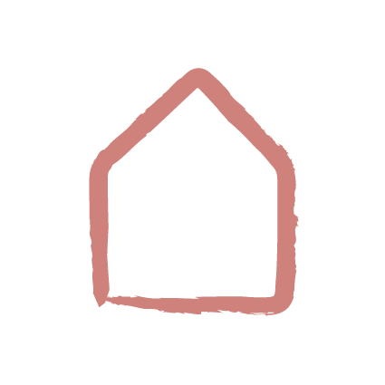

Gabrielleet son équipe : le contenu, la présence en ligne, les validations.
WilliamLe contenu planifié, la publicité, les chiffres et la stratégie.

Chaque jour
Garder l'œil ouvert.
Gabrielle
Veille des réseaux sociaux
15 minRépondre aux messages et aux commentaires, voir ce qui se passe sur ses comptes.
WWilliam
Veille des publicités
10 minVérifier que les publicités roulent bien et réagir au besoin.

Chaque semaine
Préparer la semaine suivante.
Gabrielle
Valider le contenu
30 minDans son espace de validation : elle approuve, ou dit ce qu'elle changerait.
WWilliam
Créer et planifier le contenu
2 hLes publications de la semaine suivante, prêtes et planifiées.

Chaque mois
Tourner, mesurer, ajuster.
Gabrielle
Tournage et montage de 12 Reels
10 hLes vidéos du mois, dans ses maisons et son quotidien. Environ une demi-journée de tournage et 6 h de montage.
WWilliam
Rapport de performance et ajustements
2 hCe que le marketing a donné ce mois-ci, et ce qu'on ajuste dans la stratégie.
Campagne de publicité
3 hCréer la campagne, ou la mettre à jour.
Gabrielle
≈ 17 h par mois
environ 4 h par semaine
- Veille des réseaux5 h
- Validations2 h
- 12 Reels10 h
William
≈ 16 h 30 par mois
environ 4 h par semaine
- Veille des publicités3 h 30
- Contenu de la semaine8 h
- Rapport et ajustements2 h
- Campagne de pub3 h
Un mois compte environ 20 jours ouvrables et 4 semaines.